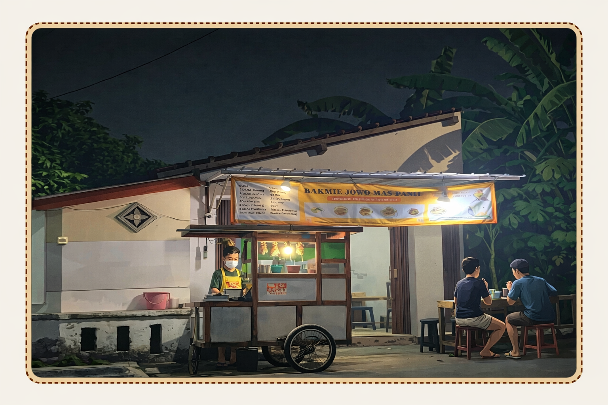

Bakmie Jawa Mas Panji adalah usaha kuliner UMKM warisan keluarga yang kemudian dikembangkan oleh anak hingga cucu dengan menghadirkan cita rasa bakmie jawa tradisional dengan bumbu khas rumahan.
Kami berkomitmen untuk menjaga kualitas rasa, kebersihan, dan pelayanan agar setiap pelanggan mendapatkan pengalaman makan yang memuaskan.
Dengan bahan berkualitas dan resep pilihan, Bakmie Jawa Mas Panji siap menjadi pilihan kuliner favorit keluarga.